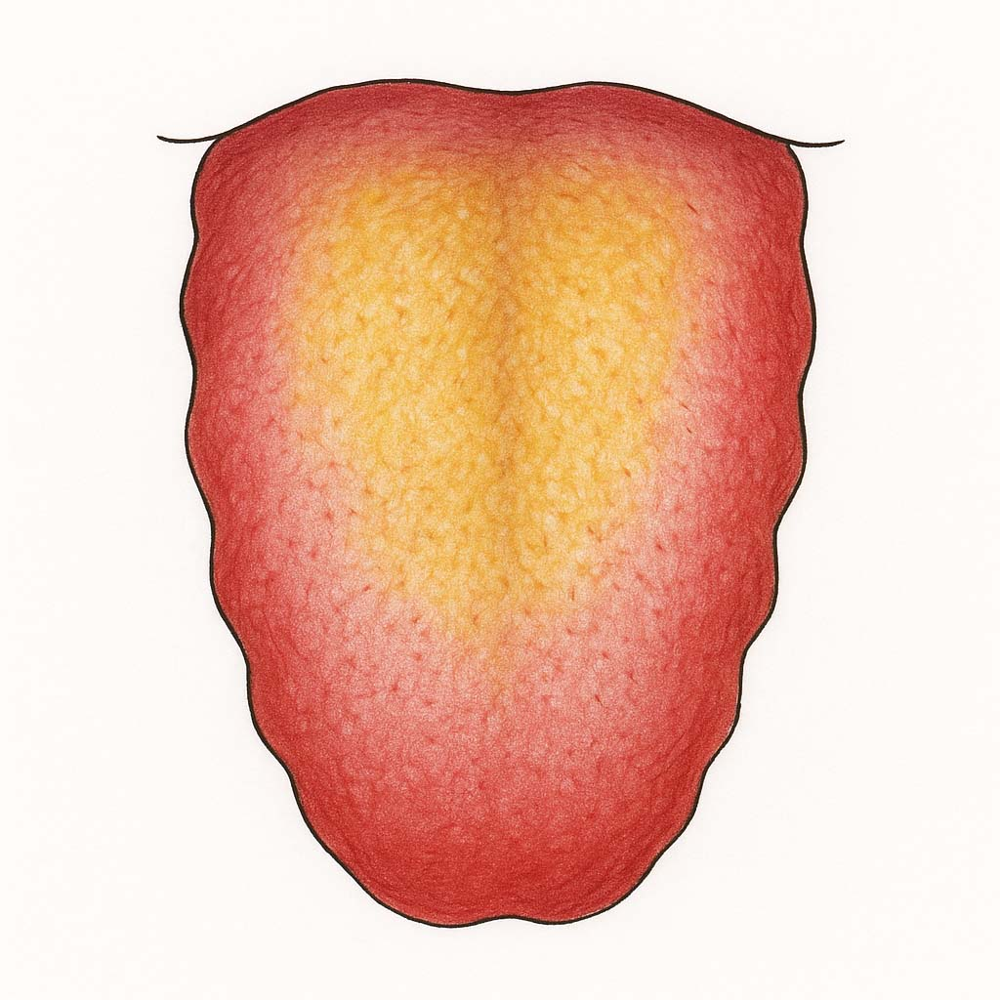

湿熱タイプ

体質 湿熱タイプ
のぼせる、ほてる、暑がる体質の「湿熱タイプ」
水腫体質
からだの中に余分な熱がこもった「湿（血）熱」タイプ
体質の説明、主な特徴
暑がりで汗っかきのがっちり肥満型。
「水」と「熱」の過剰ですので、充満した不要物を追放しましょう！
暑がりで冷房を好みます。肥満気味。顔が赤く吹き出物出やすい。
便秘、粘り気がある便で臭いが強い。生理周期は早い傾向で量は多くおりものも多い。
喉が渇き冷たいものを好み、汗をかきやすい。
なりやすい不調・病態（からだとこころ）
化膿性の炎症。蓄膿症、慢性鼻炎、花粉症、結膜炎、緑内障、慢性中耳炎、ニキビ、面疔、湿疹、おでき、アトピー、ケロイド形成、
気管支拡張症、扁桃炎、リンパ腺炎、乳腺炎、慢性胃炎、膵臓炎、肝炎、胆嚢炎、虫垂炎、大腸炎、過敏性腸症候群、腎炎、膀胱炎、前立腺炎、膣炎、
糖尿病、高脂血症、高血圧、関節リウマチ、胆石、腎結石、各種ガン、前立腺肥大、
心筋梗塞、動脈硬化、脳卒中、うつ病。
舌の特徴（正常との比較）
正常な舌（画像）

湿熱の舌（画像）
他の体質との関連
「気滞」の人が水を取りすぎ、「湿痰」の人がストレスをためると「湿熱」に。
血流が悪く「血瘀」や、胃腸に溜まり「脾虚」にもなりやすい。
養生ポイント
「湿熱」を取り込む脂っこい飲食物に注意。イライラや怒りなども溜め込まないように。
カラダを動かし汗をかいて体内の余分な「湿熱」を発散しましょう。
体内の「湿」や「熱」の生産を抑えるように意識しましょう。
未病先防…１
全体的に食べ過ぎの傾向。また、濃い味（甘い、辛い、塩辛い）、こってり、高カロリー、酒類は「熱」を作り、「湿」をためます。
ビール、水割り、カクテル、刺身、冷しゃぶ生肉、チーズ。ミルクやヨーグルトの取り過ぎも注意。
わさび、辛子、生姜、山椒などは適量なら解消しますが、摂り過ぎは「熱」を作ります。
未病先防…２
「湿」と「熱」の発生を防ぐ。
「湿」の多い湿熱、「熱」の多い気滞の養生術を参考に、生活の改善を図りましょう。
既病防変
運動＋薬膳茶で、カラダに溜まった毒素のお掃除。
蓄えがありすぎるので、カラダを動かし、汗を流して、食べる以上に「湿」や「熱」を消費すること。
そして、ハトムギ、菊花、トウモロコシの毛などの薬膳茶でカラダの掃除を。高麗人参、ローヤルゼリーなどは「湿熱」を強める作用あるので注意。
経絡/ヨガ/運動処方
腎経、膀胱経。
有酸素運動などで発汗を促し、全身運動。
閉脚前屈、開脚前屈体操。
効果的なツボ=脾兪、陰稜泉、水分など
効果的なヨガ＝パシュチモタアナアサナ（閉脚前屈）など
薬膳施治
清熱瀉火（せいねつしゃか）
からだの中の余分な水分に溜まった熱を冷まし、いらない水分を流す。
おすすめの食材
はと麦、緑豆、あずき、トマト、れんこん、白菜、セロリ、バナナ、スイカ、柿、セリ、ナズナなど。
瓜類（冬瓜、苦瓜、胡瓜、西瓜、南瓜、糸瓜）。南瓜だけ温性。
水分代謝を良くするもの。熱を冷ますもの。解毒するもの。
ただし食材には温・熱・平・涼・寒の五つの性質があります。
今の自分の体質をチェックし、寒熱虚実の傾きを把握したうえで、そのバランスを中庸に整えてくれる食材をとるようにしましょう。
良いと言われる物でもそればっかり摂り過ぎるのは良くありません。
おすすめ商品（カテゴリーリンクで対応）
注意するもの
唐辛子、生姜など香辛料、ねぎ、牛肉、鶏肉、羊肉、酒など熱を生むものは避ける
摂ると良い四気・五味・帰経食材
性：涼性・寒性 味：苦味・鹹味 帰経：肝・心・胆・小腸
国際中医師からのアドバイス
激辛、こってり、高カロリー、お酒など湿熱をつくる飲食物を控えめにする。
イライラしたりカッカしないで、ストレスも溜め込まないように。
カラダを動かし汗を流して、体内の余分な「湿熱」をデトックスしましょう。
昔から「怪病多痰」といい、原因不明や完治させる治療法のない難病などの原因は「痰」と呼ばれる湿邪が原因と考えられてきました。
真夏の寝ていても汗をかいて水分を失う季節はこまめな水分補給が必要ですが、それ以外は特にオフィスワークなど一日中室内で過ごすことが多い人は余分な水分は控えめにしましょう。